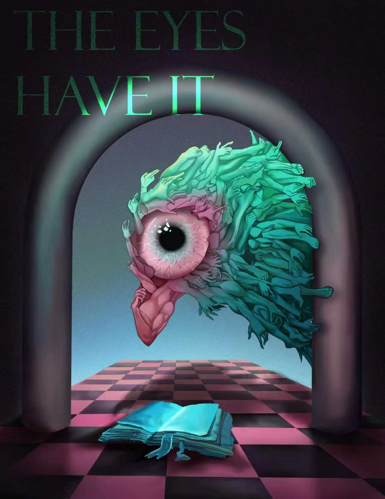

Selected Work 01 / 11
The Eyes Have It
A surreal image built around an all-seeing eye, layered hands and a theatrical checkerboard space.
- Collection
- Selected Work
- Group
- Finished illustration
- Entry
- 01 / 11
- Artist
- Kelly Yin

Behind the image
A dark, dreamlike composition where the gaze becomes both subject and architecture. Repeated hands create a sense of movement, tension and collective attention.
Next projectSugar Rush →